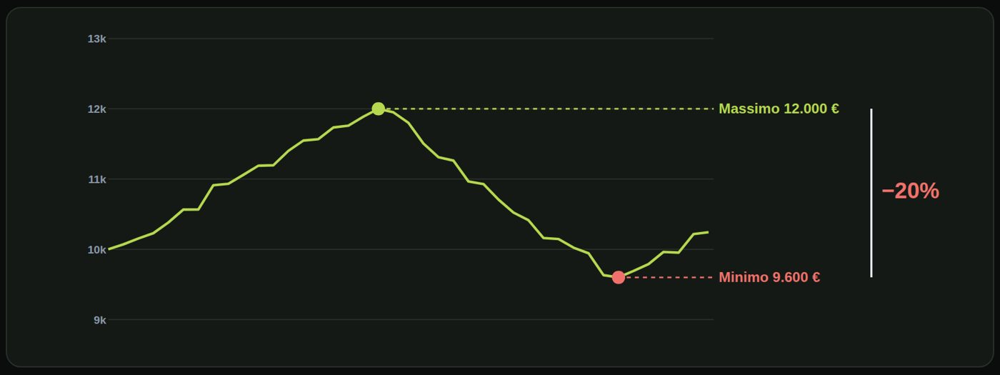
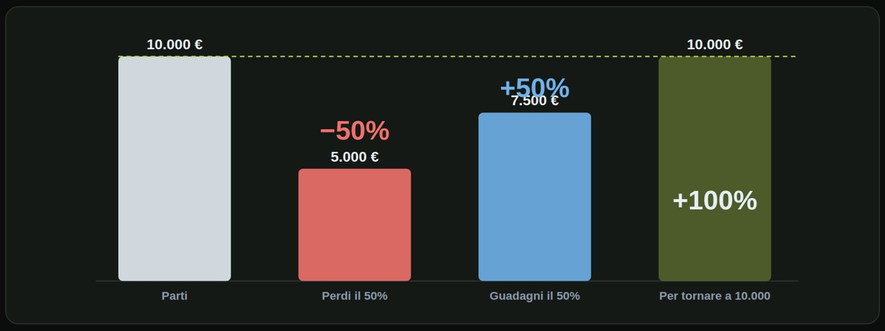
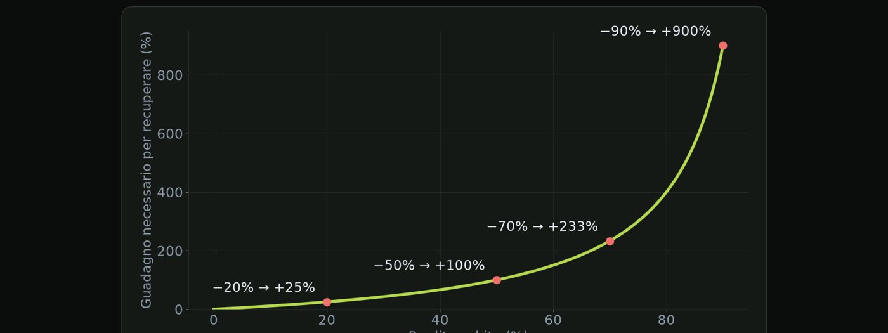
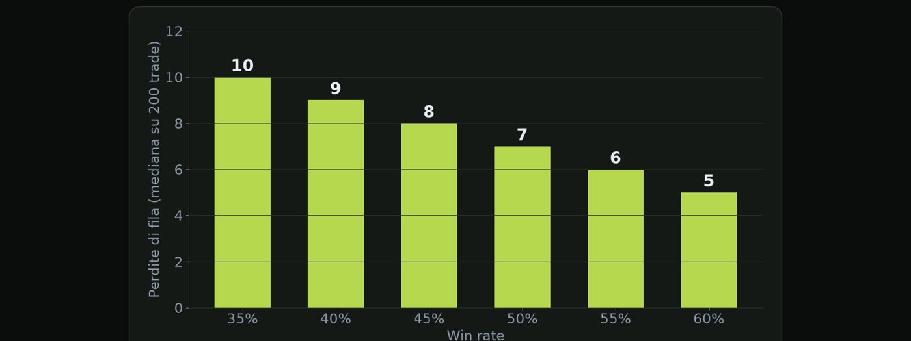
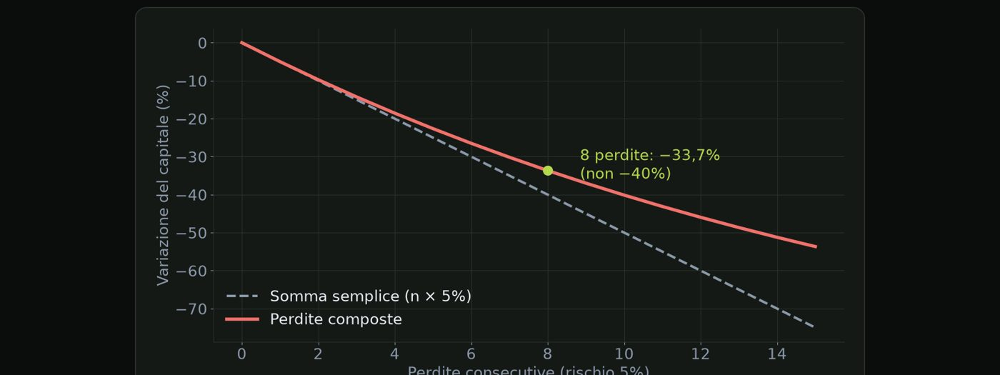
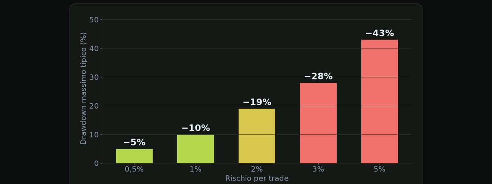

Materiale educativo, non consulenza finanziaria. Il trading con leva su forex, CFD e futures comporta un rischio elevato: puoi perdere tutto il capitale. Numeri, esempi e simulazioni non prevedono risultati futuri.
La distanza tra il massimo del conto e il punto in cui sei adesso.
Il drawdown è il calo del conto rispetto al suo massimo precedente. Non rispetto al capitale iniziale. Si misura in percentuale: massimo meno valore attuale, diviso il massimo. Il drawdown massimo è il peggiore calo di tutta la storia del conto.
| Capitale iniziale | 10.000 € |
| Massimo raggiunto | 12.000 € |
| Punto più basso dopo | 9.600 € |
| Drawdown | (12.000 − 9.600) ÷ 12.000 |

Guardiamo l'esempio sulla curva del conto, che sale e scende. Il conto sale fino a dodicimila euro: questo è il massimo. Poi scende fino a novemilaseicento: il punto più basso. La distanza tra i due, in percentuale del massimo, è il drawdown: meno venti per cento. Il drawdown si misura sempre dal picco, non dal punto di partenza.
Perché è così importante? È la misura del dolore: quanto stai soffrendo rispetto al meglio che avevi. È il parametro che le prop firm controllano, con limiti rigidi, come vedremo nel modulo sette. E decide se riesci a seguire il piano. Un drawdown che non sopporti ti farà cambiare le regole nel momento peggiore.
| Misura | Cosa dice |
|---|---|
| Drawdown attuale | dove sei ora rispetto al massimo |
| Drawdown massimo | il peggiore della storia |
| Durata del drawdown | quanto tempo serve per tornare al massimo |
Il drawdown non si evita. Si dimensiona.
La matematica asimmetrica del drawdown.

Parti da diecimila euro. Perdi il cinquanta per cento, e guadagni il cinquanta per cento: sei tornato a diecimila? Guardiamo. Il conto parte da diecimila euro. Perdi il cinquanta per cento: ne restano cinquemila. Guadagni il cinquanta per cento: ma è il cinquanta per cento di cinquemila, cioè duemilacinquecento. Arrivi a settemilacinquecento. Per tornare a diecimila ti serve un guadagno del cento per cento, non del cinquanta. Il guadagno si applica a una base più piccola.
La formula del recupero è: uno diviso uno meno il drawdown, meno uno. Il drawdown va espresso in decimale: zero virgola trenta per meno trenta per cento. Il risultato è il guadagno necessario per tornare al massimo.
| Perdita | Guadagno necessario |
|---|---|
| −10% | +11,1% |
| −20% | +25% |
| −30% | +42,9% |
| −40% | +66,7% |
| −50% | +100% |
| −60% | +150% |
| −70% | +233% |
| −80% | +400% |
| −90% | +900% |
Dopo −50%, ogni punto in più costa sempre di più.

Sul grafico si vede bene la curva. Fino a circa meno venti per cento la salita è dolce, poi diventa ripida, e oltre meno cinquanta diventa quasi verticale. Per questo molti trader seri hanno limiti di drawdown intorno al dieci o venti per cento: oltre quella soglia recuperare diventa sempre più difficile.
Il tuo primo lavoro è non perdere molto. Il secondo, guadagnare.
Quante perdite di fila sono normali? Più di quante pensi.
Un'illusione comune: ho perso sei volte di fila, c'è qualcosa che non va. Forse. Ma forse è solo statistica. Le serie di perdite fanno parte di ogni sistema, anche di quelli buoni. Il problema non è la serie in sé, ma il rischio per trade: è lui a decidere quanto ti costa.

Questo grafico mostra la serie di perdite più lunga che ti aspetti, in mediana, su duecento operazioni, al variare del win rate. Con un win rate del trentacinque per cento ti aspetti dieci perdite di fila. Al quarantacinque, otto. Al sessanta, cinque. Anche con il sessanta per cento di vittorie, cinque perdite consecutive sono normali.
| Serie di almeno… | Probabilità |
|---|---|
| 5 perdite | 99% |
| 6 perdite | 93% |
| 8 perdite | 53% |
| 10 perdite | 19% |
| 12 perdite | 6% |
Simulazione, 40.000 percorsi.
| Rischio | 8 perdite | 10 perdite |
|---|---|---|
| 1% | −7,7% | −9,6% |
| 2% | −14,9% | −18,3% |
| 5% | −33,7% | −40,1% |
Le perdite si compongono (lezione successiva).
Il rischio per trade si sceglie guardando la serie peggiore, non il caso medio.
Perché 8 perdite del 5% non fanno −40%.
Ogni perdita si applica al capitale che resta, non a quello iniziale. Quindi le perdite successive pesano meno in valore assoluto, anche se sono la stessa percentuale. Il risultato è sempre meno grave della somma semplice. E per i guadagni vale il contrario: crescono più della somma.
La formula è il capitale iniziale per uno meno r, elevato a n. r è il rischio per trade in decimale. n è il numero di perdite consecutive. E la perdita totale è uno meno quel fattore.
| Fattore per perdita | 0,95 |
| Dopo 8 perdite | 0,95⁸ = 0,663 |
| Perdita totale | 1 − 0,663 |

Sul grafico, la linea tratteggiata è la somma semplice, quella rossa le perdite composte. Più perdite consecutive, più si allontanano. Ma attenzione: questa differenza è a tuo favore sulle perdite. Quella che pesa davvero è l'asimmetria del recupero che abbiamo visto nella lezione precedente.
| Rischio | 5 perdite | 10 perdite | 15 perdite |
|---|---|---|---|
| 1% | −4,9% | −9,6% | −14,0% |
| 2% | −9,6% | −18,3% | −26,1% |
| 3% | −14,1% | −26,3% | −36,7% |
| 5% | −22,6% | −40,1% | −53,7% |
1 − (1 − r)ⁿ
Le percentuali non si sommano. Si moltiplicano.
Dal rischio per trade al peggiore calo tipico.
Questa è la relazione più importante del corso: più alto è il rischio per trade, più profondo sarà il drawdown. Il drawdown massimo dipende dalla sequenza dei trade, quindi non è un singolo numero: è una distribuzione. Possiamo stimarlo con una simulazione, dato un sistema con le sue statistiche.
| Win rate | 45% |
| Guadagno medio | +1,8 R |
| Perdita media | −1 R |
| Expectancy | +0,26 R |
| Operazioni simulate | 200 per percorso |

Ecco il drawdown massimo mediano, quello che capita nella metà dei casi. Rischiando lo zero virgola cinque per cento, il drawdown tipico è circa il cinque. Con l'uno per cento, circa il dieci. Con il due, circa il diciannove. Con il tre, ventotto. Con il cinque per cento, quarantatré. Il drawdown cresce quasi in proporzione al rischio: raddoppi il rischio, raddoppi il drawdown.
| Rischio | Tipico | 9 casi su 10 sotto |
|---|---|---|
| 0,5% | −5% | −8% |
| 1% | −10% | −15% |
| 2% | −19% | −28% |
| 3% | −28% | −40% |
| 5% | −43% | −59% |
Simulazione: non è una previsione.
Come si usa tutto questo? Parti dal drawdown che sei disposto a sopportare, e scegli il rischio di conseguenza, non il contrario. Lascia un margine rispetto al tipico: nel caso peggiore il calo è molto più profondo. E rifai il calcolo con i tuoi numeri. Win rate e RR del tuo sistema cambiano tutto. Nel modulo cinque imparerai a farlo con un simulatore.
Non scegli il rischio per quanto vuoi guadagnare. Lo scegli per quanto puoi perdere.
Prova a risolverli senza guardare: le soluzioni sono nella pagina successiva.
| Massimo del conto | 15.000 € |
| Valore attuale | 12.750 € |
| Drawdown | −35% |
| Domanda | guadagno necessario per tornare al massimo? |
| Obiettivo | dopo 10 perdite di fila, al massimo −15% |
| Domanda | rischio massimo per trade? |
| Rischio | 3% |
| Perdite di fila | 8 |
| Drawdown che sopporti | circa −20% nel caso tipico |
| Sistema | quello di esempio |
| Calo | 15.000 − 12.750 = 2.250 € |
| Percentuale | 2.250 ÷ 15.000 |
Il calo è duemiladuecentocinquanta euro. Diviso quindicimila fa il quindici per cento.
| Formula | 1 ÷ (1 − 0,35) − 1 |
| Calcolo | 1 ÷ 0,65 − 1 = 0,538 |
Uno diviso zero virgola sessantacinque fa uno virgola cinquecentotrentotto, meno uno: zero virgola cinquecentotrentotto. Servono più cinquantatre virgola otto per cento.
| Condizione | (1 − r)¹⁰ ≥ 0,85 |
| Soluzione | r ≤ 1 − 0,85^(1/10) |
| Calcolo | 1 − 0,9839 |
Serve che uno meno r, alla decima, sia almeno zero virgola ottantacinque. Quindi r è al massimo uno meno la radice decima di zero virgola ottantacinque, cioè uno virgola sei per cento circa. Con l'uno virgola cinque per cento sei dentro il limite.
| Fattore | 0,97⁸ |
| Calcolo | 0,784 |
| Perdita | 1 − 0,784 |
Zero virgola novantasette alla ottava dà zero virgola settecentottantaquattro. La perdita è venti uno virgola sei per cento, non ventiquattro.
| Dalla tabella | 2% → −19% tipico |
| Caso peggiore | fino a −28% |
Dalla tabella, il due per cento dà un tipico di meno diciannove. Ma nel caso peggiore arrivi a meno ventotto. Per questo conviene scendere, tra l'uno e l'uno e mezzo per cento: avrai ancora margine se le cose vanno male.
Spunta ogni punto solo se sapresti spiegarlo a voce a un altro trader.
Materiale educativo, non consulenza finanziaria. Il trading con leva su forex, CFD e futures comporta un rischio elevato: puoi perdere tutto il capitale. Numeri, esempi e simulazioni non prevedono risultati futuri. · riskly.trade